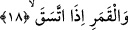

ve kendi mekanına sığınan böcek, haşere ve irili-ufaklı hayvanlar ile canavarlardan
ibarettir. Çünkü gece bastırdığında her şey kendi barınağına yönelir. Bütün bunlar
gündüzün etrafa yayılmışken karanlık bastırdığında kendi yuvasına ve kovuğuna çekilir.
Bazı âlimlerin ifâdesine göre gecenin topladığı deyiminden maksad geceleri kalkıp
teheccüd namazı kılan kullardır. Zira Allah Teâlâ seher vakitlerinde kalkıp istiğfar eden
kullarını övmektedir. Dolayısıyla bu kulların üzerine yemin edilmesi câiz olur.
Kâşânî âyeti şöyle tefsir ediyor: “Geceye ve içinde topladıklarına yemin ederim”
Yani beden zulmetinin gecesine ve onun toplamış olduğu kuvvet, alet ve isti’dada yemin
ederim. Bu isti’dad ile ilim, fazilet ve makamlarda yükselmeyi, mevhibe ve kemâlâtı
kazanmak mümkün olur.
et-Te’vilâtü’n-Necmiyye’de bu âyetten şu işâretler çıkarılıyor: Burada Allah Teâlâ
yeminle nefs-i emmare karanlığı ve gizlenmiş nefs-i mutmainne gecesine işâret ediyor.
Bu nefis umulan makama ulaştıktan sonra kendini gizliyor ve nefs-i emmare hükmüne
geri dönmekten mutmain hale geliyor ve artık kendisi için Muhammedî zürriyyetten
kâmil olan kimselerin vasıflarında temkin noktasında çeşitli nasipler elde ediyor. Bu
nedenle o nefse: “Ey huzura kavuşmuş nefis! Sen ondan hoşnut o da senden hoşnut
olarak Rabbine dön.” (Fecr 89/27-28) buyruluyor. “Dönmek”ten maksad bizzat
dönmenin kendisi değildir. Tam tersine küllî maksad kendisine dönülecek olan Allah’a
vuslattır. Aynı âyetteki “topladığına” ifâdesiyle kasdedilen ise onun biraraya getirdiği
rûhânî kuvvetlerdir. Bu kuvvetler nefs-i emmarenin tasarruf elinden elde edilmiştir.
18. Dolunay olmuş aya yemin ederim ki,
Âyetteki “itteseka” ifâdesi “ictemea”; yâni toplanmış, ondördüncü gece bedir hâline
gelmiş ay demektir.
Fethu’r-Rahman’da ise şöyle bir tefsir yapılıyor: Bıyz gecelerinde dolgun hale gelen
aya yemin ederim. Az önce işâret ettiğimiz gibi “itteseka” biraraya geldi, toplandı
demektir. Bu kelimeyi bir örnek ile açıklamak gerekirse “filancanın işleri salah ve iyilik
üzere toplanmıştır” derler. Kamus’ta ifâde edildiğine göre bu kökün anlamı “toplamak,
taşımak” demektir.
Allah burada şafak, gece, dolunay üzerine yemin ediyor. Çünkü bütün bu zikredilen
nesneler bir halden bir başka hale geçişi ifâde ediyor. Dolayısıyla bunlar, üzerlerine
yemin edilerek vurgulanılmak istenilen gerçeğe uygun düşen nesnelerdir. Yani Allah
Teâlâ uzayda meydana gelen değişikliklerin ve orada bulunan unsurların üzerine yemin
ederek yaratıkların ahvalinin bir düzeyde durmadığını, halden hale geçtiklerini
vurgulamış, pekiştirmiş oluyor. Şimdi üzerine yemin edilen unsurlara bir bakalım: Şafak
hâli kendisinden önceki hale; yâni gün ışığına benzemediği gibi kendisinden sonraki